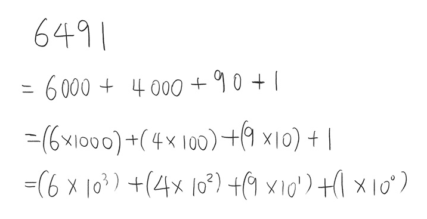

- "진법"이란
- 우리가 흔히 알고있는 10진법, 2진법 등은 위치값 기수법(positional system)이라는 수의 표현법이다. 기수법은 수를 눈으로 볼 수 있게 표현한 방법이며, 이중 하나인 위치값 기수법은 숫자의 위치와 계수를 이용하여 수를 나타내는 방법이다.아주 오랜 옛날부터 수를 표하하기 위해 다양한 기수법이 고안되어 왔으며, 현대에서 기수법이라 하면 일반적으로 위치값 기수법을 의미한다고 한다.이 위치값 기수법 중 우리를 포함한 현대인이 대표적으로 사용하는 체계가 바로 10진법이다. 10진법에서는 0~9까지가 한 자릿수에 표현되며 9를 초과하여 10이 되면 자리올림이 발생한다. 컴퓨터가 대표적으로 사용하는 2진법은 한 자릿수에 0,1만 표현되며 1을 초과하여 2가 되면 자리올림이 발생한다. 결국 x진법은 x를 기준으로 자리올림하는 표현법이다.
- 예시로 살펴보는 진법의 정의 풀이 
컴퓨터랑 연애하기 위한 디지털어 정독